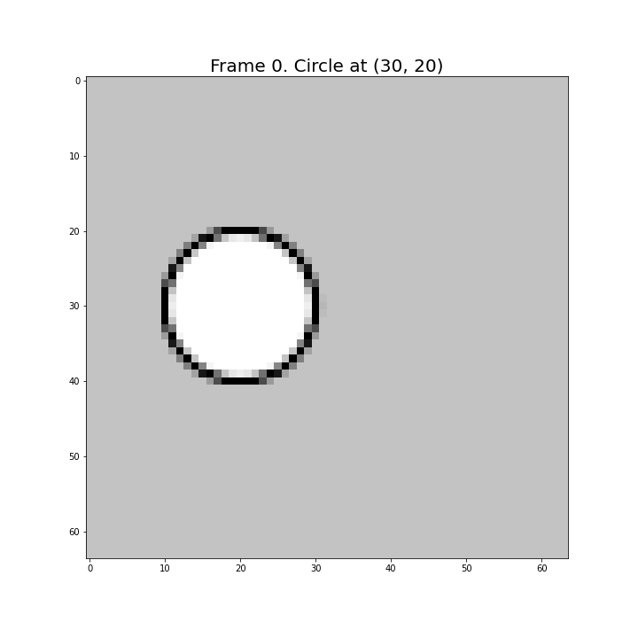
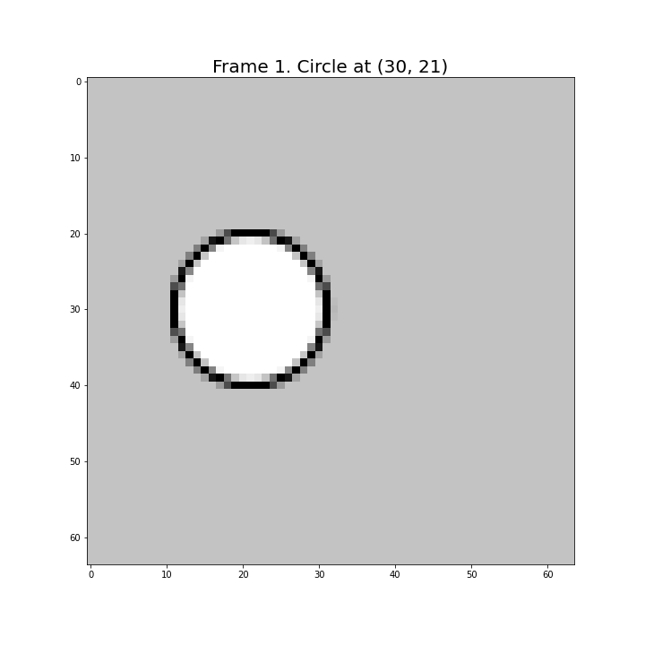

In this milestone we will discuss the characteristics of the motion estimation and compensation of frames (considering only one component) in the DWT domain.
The next natural step in the process of decorrelating the sequence of frames is to remove the temporal redundancy by means of Motion Compensation (MC). Basically, MC consists in substracting to the video data a prediction performed with the information that is avaliable to the decoder. If this prediction is accurate, the result of this operation is a residual video with a lower temporal redundancy, that can be compressed with a higher compression ratio because there is less information to encode in the residue sequence than in the original one.
At this stage of the encoding process, the video data is represented in the DWT domain, and therefore, we need to perform a In-Band Motion estimation and Compensation (IBMC) [1]). Let’s suppose that the number of levels of the DWT is 1, and therefore, each frame has been decomposed into two 2D subbands and (remember that using the notation introduces in the previous milestone, has inside the three high-frequency subbands: , and , and that ). This discussion will be also constrained to the case in which the movement of the objects in the scene is a integer number of pixels.
Unfortunately, DWT decompositions are shift-variant as a consequence of the downsampling performed during the DWT to achieve a critical representation. This can be seen in the Fig. 1 were some DWT coefficients of a test video with three test frames has been shown. As it can be seen, when the circle moves to the left only one pixel (as happens in the frames 0 and 1), the value of the coefficients that correspond to the circunference of the circle are different between the reference frame (0) and the predicted frame (1). This makes quite difficult to estimate and compensate the motion between frames. Notice also that the effects of shift-variance is also visible after using the inverse transform when the coefficients are filtered or quantized, because the aliasing between the filters is not completely cancelled in this case [2].
|  |  | |
| | |
|
| | |
|
| | |
|
| | |
|
| | |
However, suprisingly, at it can be also seen in the Fig. 1, when the circle has traveled two pixels (frames 0 and 2), a perfect match is achieved! The reason why the 1-pixel motion generates different coefficients in the reference and the predicted frames, and the same coefficients for a 2-pixel motion is because, in the first case the right coefficients were discarded by the downsamplers, and in the second case not.
Usually, we call phases to the two possible coefficients resulting from one (1D) filter to be subsampled, being the even phase, the even coefficients, and the odd phase, the odd coefficients. Therefore, when the motion is of type “even” (when we have a -pixels motion), we should use the even phase to compensate the frames, and viceversa (use the odd phase to compensate a -pixels motion). Notice that in the 2D case, and always working with only one level of the DWT, we have up to four different phases: (even, even)-, (even, odd)-, (odd, even)-, and (odd, odd)-phase coefficients. Thus, depending on the type of motion detected, the corresponding phase should be selected.
There are different alternatives for regenerating the phases discarded by the subsamplers of the DWT. This is equivalent to compute the Overcomplete DWT (ODWT) [5].
Up to date, all the video codecs that use critically sampled IBMC also use block-based motion compensation. This technique divides the frames into non-overlaping blocks and computes a motion vector for every block, that provides a projection (a prediction) of the reference frame that must be as close as possible to the predicted frame . These blocks usually have a size of 16x16 pixel.
The use of blocks imples that:
Unfortunately, there is a problem with mixing the phases. To reconstruct the border pixels of the blocks, the adjacent (same phase) coefficients must be also used by the decoder (see this notebook). For this reason, the size of the blocks affects to the compression ratio (the smaller the blocks, the higher the number of adajacent coefficients, and therefore, the lower the compression ratio). We can think about that this effect can be mitigated using larger block sizes, but this will also affect to the compression ratio because the quality of the predictions worsen with the increment of the size of the blocks. This supposes an optimization problem that it’s hard to solve, especially in real-time applications.
Alternatively, we can estimate and componsensate the motion in an alternative representation of the DWT decomposition that we have called CS-LPT. The Laplacian Pyramid was proposed by Burt and Adelson [3] and has been used for the design of spatially-scalable image and video codecs, such as SHVC [7].
The LP is a frame expansion that generates an expanded (not critical) octave-band decomposition, and in some way, it can be considered one of the precursors of the dyadic DWT. Unlike in the DWT, such expansion is consequence of that the filters used for creating the LP levels are not orthogonal and therefore, they do not cancel the aliasing between them (see this notebook). On the other hand, the redundancy in the LP tends to 2 with the number of levels, which affects negatively to the compression ratio. An adventage of this is that the LP is shift-invariant (see this notebook).
CS-LPT is a special case of the LP where the filters are (bi)orthogonal DWT filters (in this case, we say that the LP is a tight frame). The 1-levels CS-LPT (that has two levels in its pyramid) of the frame defined by
| (1) |
where
| (2) |
The levels CS-LPT is computed simply by appliying the Eq. 1 to the subband , recursively.
The CS-LPT is only near shift-invariant as it can be seen in this notebook. However, it has several advantages:
It’s reasonable to expect that the motion of an object between the frames and must move their low and the high frecuencies in the same amount of pixels. With this idea in mind, we estimate the motion in the subband using only the information provided by the low-frequency subband . More concretely, we implement:
| (3) |
and
| (4) |
The output of this step is a motion vectors field , that describes how to project the onto . Notice that should also be a good candidate for mapping onto . Notice also that the number of vectors in can be as high as the number of pixels in (and ).
| (5) |
and the prediction error in the high-frequency subband as
| (6) |
Notice that depends only on and , not on the high frequency subbands.
| (7) |
where
| (8) |
and is a binary matrix defined by
| (9) |
| (10) |
Notice that it must hold that
| (11) |
where denotes the variance. Eq. 11 implies that
| (12) |
should hold, where CR stands for Compression Ratio.
Please, implement Eq. 10, preferiblely in a Jupyter notebook. Use the moving circle generator (see this notebook) to create the video. Verify also Eq. 12.
In groups, you will present the results for this milestone during the examination time.
None.
[1] Y. Andreopoulos, A. Munteanu, Van der A.G., J.P.H. Cornelis, and P. Schelkens. Complete-to-Overcomplete Discrete Wavelet Transforms: Theory and Applications. IEEE Transactions on Signal Processing, 53(4):1398–1412, 2005.
[2] A.P. Bradley. Shift-invariance in the Discrete Wavelet Transform. Proceedings of VIIth Digital Image Computing: Techniques and Applications. Sydney, 2003.
[3] P.J. Burt and E.H. Adelson. The Laplacian Pyramid as a Compact Image Code. IEEE Transactions on Communications, COM-31(4):532–540, April 1983.
[4] X. Li, L. Kerofsky, and S. Lei. All-phase motion compensated prediction in the wavelet domain for high performance video coding. In Proceedings 2001 International Conference on Image Processing (Cat. No. 01CH37205), volume 3, pages 538–541. IEEE, 2001.
[5] S. Mallat and G. Peyré. A Wavelet Tour of Signal Processing: The Sparse Way. Elsevier, 2009.
[6] H.-W. Park and H.-S. Kim. Motion Estimation Using Low-Band-Shift Method for Wavelet-Based Moving-Picture Coding. IEEE Transactions on Image processing, 9(4):577–587, 2000.
[7] G.J. Sullivan, J. Ohm, Woo-Jin Han, and T. Wiegand. Overview of the High Efficiency Video Coding (HEVC) standard. Circuits and Systems for Video Technology, IEEE Transactions on, 22(12):1649–1668, Dec 2012.